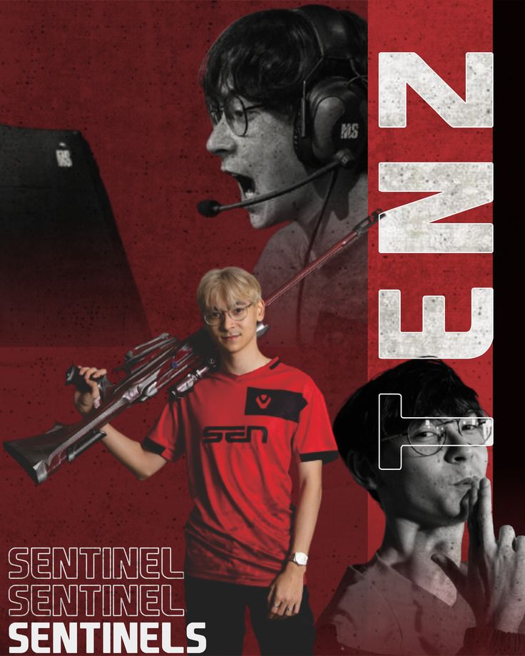
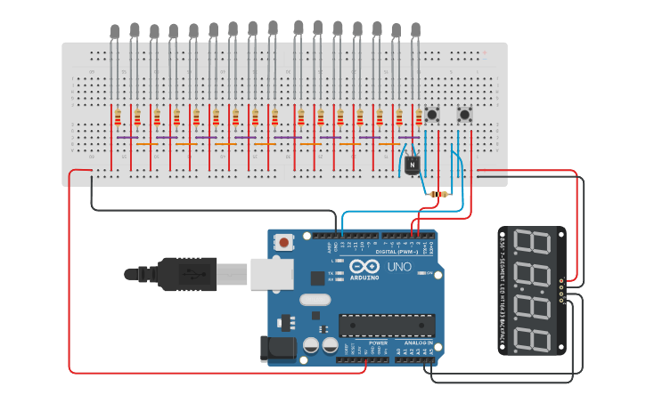
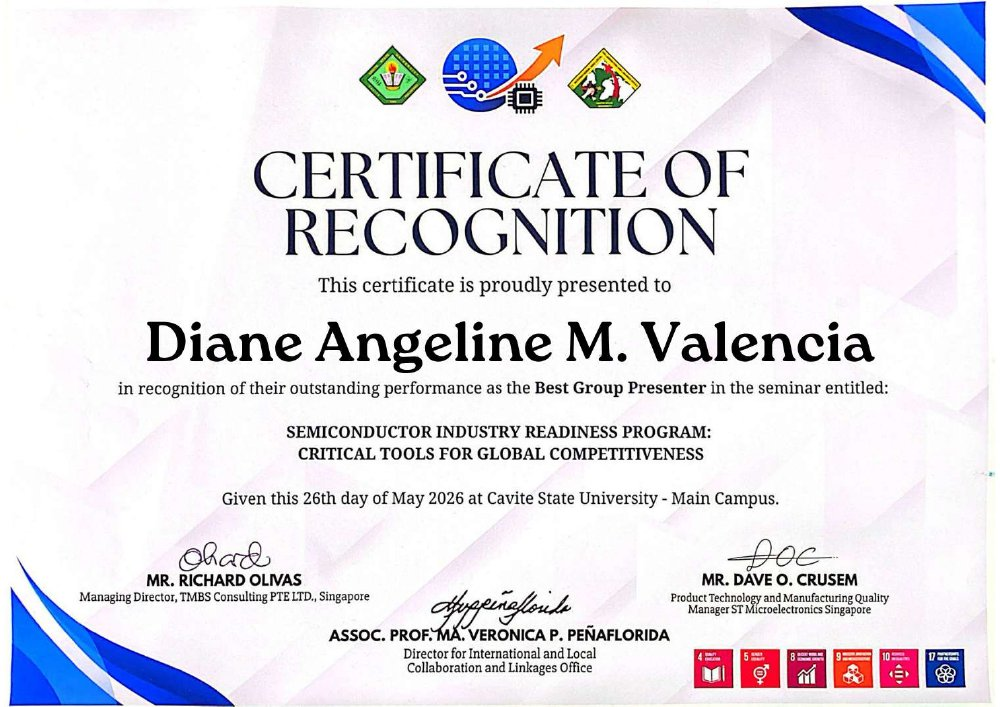
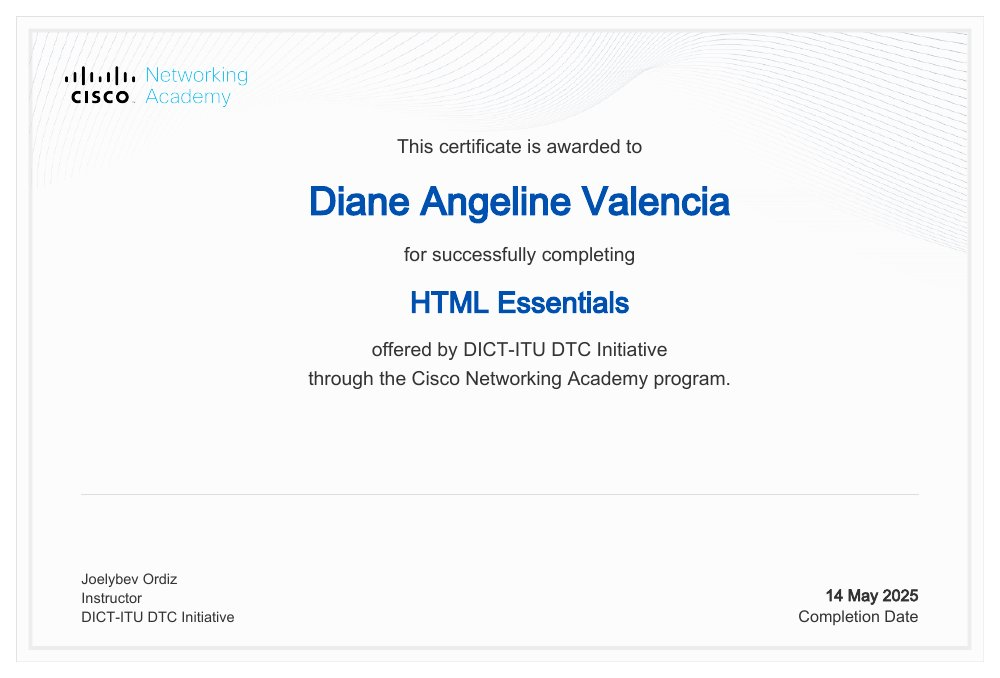

TenZ fan website
A first-year school activity inspired by my favorite pro player and streamer, Tyson “TenZ” Ngo. I turned a personal interest into a multipage website about his story and career.
From Accountancy to Computer Science — exploring web development, thoughtful problem solving, and the possibilities of tech.
Every experience, a step forward.
I’m Diane Angeline M. Valencia, a third-year BS in Computer Science student and first-year BS in Health Sciences student.
I started in Accountancy before choosing to pursue Computer Science. My interest in logic, systems, and problem solving led me toward building things with code and exploring how technology can turn an idea into something useful.
Through school activities and personal projects, I’m developing my skills in HTML, CSS, and JavaScript. My work ranges from a fan website and my first portfolio to a barangay database project and a wedding website. I’m also working on SellSight AI.
Outside my coursework, I enjoy reading books and gaming, and I follow my favorite pro player and streamer, TenZ. My interests include neuroscience, psychology, data science, and data analytics. As a programmer and developer, I like projects with a personal connection — they give me a reason to keep learning and make the work my own.
HTML, CSS, JavaScript, responsive layouts, and interactive navigation — demonstrated in my live projects.
Recognized as Best Group Presenter at a semiconductor industry readiness seminar in May 2026.
A closer look at my projects
and learning milestones.
Seven projects spanning web development, databases, AI, circuit simulation, and 3D design.

A first-year school activity inspired by my favorite pro player and streamer, Tyson “TenZ” Ngo. I turned a personal interest into a multipage website about his story and career.
My final project for Web Systems and Technologies I: a personal portfolio built from scratch in Sublime Text. It brings my introduction, skills, and coursework into one website.
A database project for a barangay, centered on organizing information in a local community context. Technical documentation and a closer look at the project will be added soon.
A wedding website for Leo and Angela, created for my sister’s celebration. The project’s additional details and preview link are reserved for a later update.
An AI project currently in development. This space will follow SellSight AI as its purpose, implementation, and progress are ready to share.
An ongoing circuit project on Wokwi. Explore the simulation and follow the project as it develops.

A street-lighting design project with a 3D model and a circuit design on Tinkercad. Explore both parts of ECO GLOW below.

Cavite State University – Main Campus
Certificate of Recognition for the seminar “Semiconductor Industry Readiness Program: Critical Tools for Global Competitiveness.”
View certificate (PDF, opens in a new tab)
Cisco Networking Academy
A 30-hour course covering HTML fundamentals and the structure of web pages. Completed through the DICT-ITU DTC Initiative academy.
Completed · 30 hoursA continuing step in my programming journey. Participation is ongoing; a completion certificate has not yet been added.
· Remote
An ongoing opportunity to explore AI development and learn through building.
Thank you for taking a look at my work.
Let’s make room for the next opportunity.
Find my work and connect with me online.